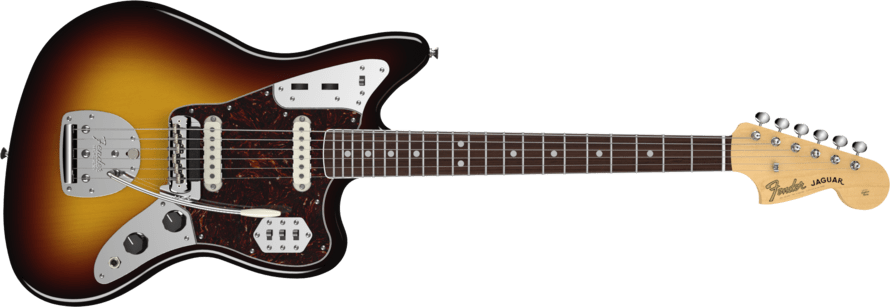

Fender Jaguar
799 euros
Cuerpo de aliso.
Mástil de arce con acabado satinado.
Diapasón de pau ferro.
22 trastes.
Anchura de la cejilla: 42mm.
Escala de 610mm.
1 pastilla New Player Series Alnico (puente).
1 pastilla New Player Series Alnico 2 (cuello).
1 control de volumen master.
1 control de tono master.